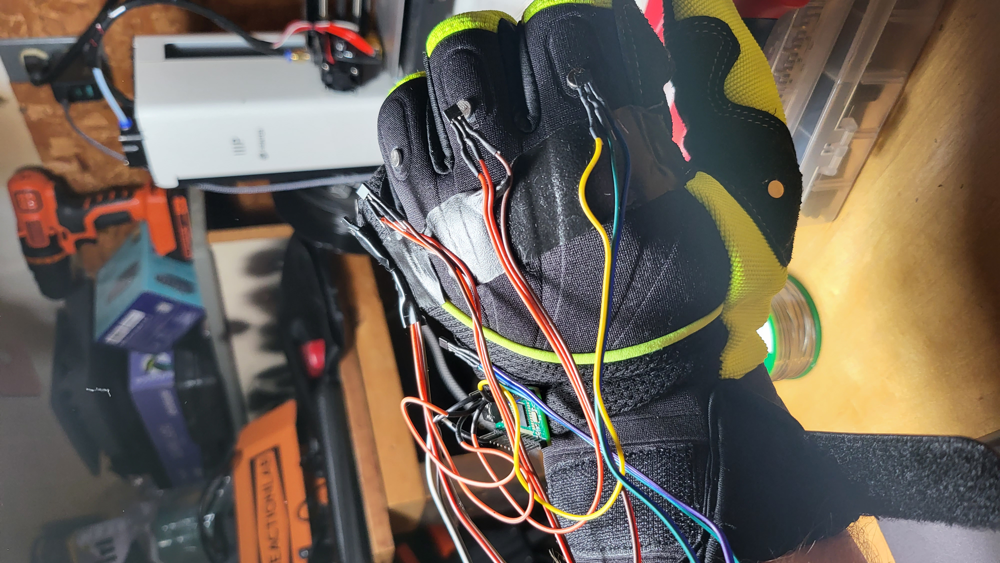

@granitrocky
Projects
Artsey glove
I fell in love with Artsey/Ardux a while back, and I've wanted to figure out how to put one on my hands at all times. Someone in the Inkeys discord had an idea about having all the keys on a straight line instead of on 2 lines, and I thought it could be cool to put that onto 2 gloves and type that way.
The StraEyio gloves were born

After this first attempt, I thought I might need to change my approach. Rather than using a glove, I considered using 3D printed rings to hold the magnets and a strip across the back of the hand to hold the hall effect sensors.
As of now, it's still WIP, but I want to share the bit of code I added to the QMK firmware for this. It is scanning all the defined key pins for an analog value and if it's at a certain threshold then the magnet has moved far enough away from the sensor to trigger a keypress. I will need to find an entry into ZMK to be able to do this wirelessly, however.
TBA
Communities
Artsey/Ardux
About a year ago I was looking into handheld keyboards and I came across Artsey, an 8 key keyboard capable of typing any character. I was intrigued. I ordered a Paintbrush and started learning.
It has been about a year, and my typing speed is roughly where I was with qwerty. 50ish wpm. I was never the fastest typist.
These days I daily drive half of a slightly modified 40 percent keyboard I call the Fatlad (a modified version of the dracuLad keyboard). I've found a wonderful space for others like me who are interested in pushing the boundaries of traditional input devices. We call ourselves Inkeys, short for Inclusive Keyboards, but really we discuss any kind of alternate system.